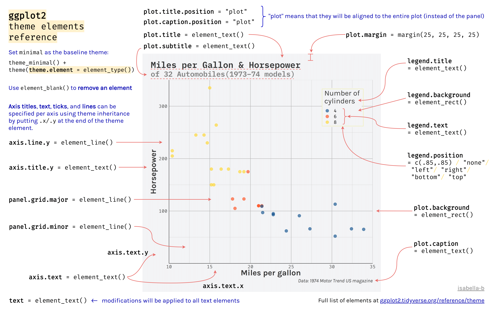
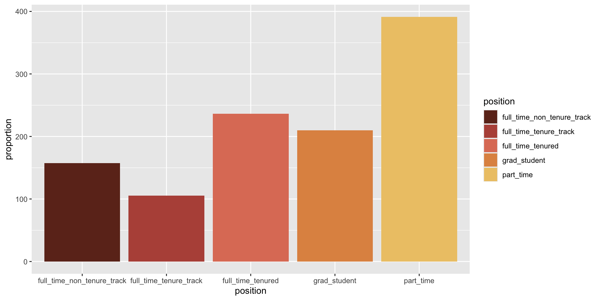

| year | full_time_tenured | full_time_tenure_track | full_time_non_tenure_track | part_time | grad_student |
|---|---|---|---|---|---|
| 1975 | 29.0 | 16.1 | 10.3 | 24.0 | 20.5 |
| 1989 | 27.6 | 11.4 | 14.1 | 30.4 | 16.5 |
| 1993 | 25.0 | 10.2 | 13.6 | 33.1 | 18.1 |
| 1995 | 24.8 | 9.6 | 13.6 | 33.2 | 18.8 |
| 1999 | 21.8 | 8.9 | 15.2 | 35.5 | 18.7 |
| 2001 | 20.3 | 9.2 | 15.5 | 36.0 | 19.0 |
| 2003 | 19.3 | 8.8 | 15.0 | 37.0 | 20.0 |
| 2005 | 17.8 | 8.2 | 14.8 | 39.3 | 19.9 |
| 2007 | 17.2 | 8.0 | 14.9 | 40.5 | 19.5 |
| 2009 | 16.8 | 7.6 | 15.1 | 41.1 | 19.4 |
| 2011 | 16.7 | 7.4 | 15.4 | 41.3 | 19.3 |
Week 8 - STEM 691
Themes and Colors
Dr. Kelly Boles & Dr. Zhen Xu
Weekly Check In/
Download .zip
Start Recording
Today’s Agenda
- Weekly Check In
- Where Are We?
- Foundational Skills
- CRAN vs. remotes
pivot_longer
- Themes
- Pre-Built
- Packages
- Custom
- Color
- Built-in Color
- Color Palettes
- Accessibility
- Collaborative Practice
- Looking Ahead
Norms
| In person norms | And also, for online learning… |
|---|---|
| Be fully present to each other & the work. | Keep your video on when possible. In large groups, mute your microphone when not talking. Close/mute/minimize other apps and devices to avoid distraction. |
| Assume positive intent & also take responsibility for the impact you have. | Remember online interaction masks even more of the full story. Notice when you are making assumptions, and seek information to check them. |
| Embrace collaboration. | Use the gallery view so you can see everyone. Use breakout groups as an opportunity to collaborate. |
| Be open to learning and accept non-closure. | Expect the inevitable technical glitches and learning curves. Exercise patience with one another. |
| Be aware of when to step up and step back. When stepping back, do so as an active listener. | Try out different modes of participation. Step back by making space for others to engage in these. |
| Land your plane–get to the point you intended. | We all know how hard it is to be talked at, especially in a Zoom session, so let’s keep it to a minimum. |
Review/
Foundational Skills
Cleaning the data
- Let’s talk a bit about cleaning data
- Some cleaning steps we would do at first to “clean up” the dataset
- Remove the erroneous values in `public_private’
- Separate the
sat_actvariables into separate variables (different ways to do this) - Remove the meaningless rows (e.g. extra rows in middle of the dataset)
- We would not want to
filter(!is.na(x))for every variable at the beginning of the analysis (or use other code that does the same thing, likecomplete.cases())
- Some cleaning steps we would do at first to “clean up” the dataset
CRAN vs. remotes
- Most packages are downloadable from CRAN but not all
#install.packages("tidyverse")
library(tidyverse)
#install.packages("remotes")
library(remotes)
#install_github("tidyverse/dsbox")
library(dsbox)tidyverseis on CRANremotesis a package on CRAN that allows you to install packages from elsewhere
dsboxis not on CRAN but is downloadable from GitHub- We will use the
install_github()function fromremotesto installdsbox
New data today = AAUP
The American Association of University Professors (AAUP) is a nonprofit membership association of faculty and other academic professionals. This report compiled by the AAUP shows trends in instructional staff as a proportion of employees between 1975 and 2011.
tidy data & pivot_longer
Requirements for tidy data:
- Each variable forms a column
- Each observation forms a row
- Each value forms a cell
Question: Is this data in tidy format? Why or why not?
| year | full_time_tenured | full_time_tenure_track | full_time_non_tenure_track | part_time | grad_student |
|---|---|---|---|---|---|
| 1975 | 29.0 | 16.1 | 10.3 | 24.0 | 20.5 |
| 1989 | 27.6 | 11.4 | 14.1 | 30.4 | 16.5 |
| 1993 | 25.0 | 10.2 | 13.6 | 33.1 | 18.1 |
| 1995 | 24.8 | 9.6 | 13.6 | 33.2 | 18.8 |
| 1999 | 21.8 | 8.9 | 15.2 | 35.5 | 18.7 |
tidy data & pivot_longer
Requirements for tidy data:
- Each variable forms a column
- Each observation forms a row
- Each value forms a cell
Answer: No:
- Violates #1. The column names (except year) are position types, which should be values in a column.
- Violates #2. Each row has multiple observations for that year.
- Violates #3. The same value types (proportions of whole workforce) are spread across multiple columns.
Let’s tidy
tidy data & pivot_longer
- Longer data (tidy data) is often preferred, esp. in {tidyverse}
pivot_longer()is your friend- See documentation here
- Inverse operation of
pivot_wider()

Batra, Neal, et al. (2021). The Epidemiologist R Handbook. www.epirhandbook.com/en/
tidy data & pivot_longer
Requirements for tidy data:
- Each variable forms a column
- Each observation forms a row
- Each value forms a cell
- How might we begin to pivot this longer?
- Which columns?
cols - What should I call the new column that holds the old column names?
names_to - What should I call the new column that holds the old values?
values_to
- Which columns?
| year | full_time_tenured | full_time_tenure_track | full_time_non_tenure_track | part_time | grad_student |
|---|---|---|---|---|---|
| 1975 | 29.0 | 16.1 | 10.3 | 24.0 | 20.5 |
| 1989 | 27.6 | 11.4 | 14.1 | 30.4 | 16.5 |
| 1993 | 25.0 | 10.2 | 13.6 | 33.1 | 18.1 |
| 1995 | 24.8 | 9.6 | 13.6 | 33.2 | 18.8 |
| 1999 | 21.8 | 8.9 | 15.2 | 35.5 | 18.7 |
tidy data & pivot_longer
Requirements for tidy data:
- Each variable forms a column
- Each observation forms a row
- Each value forms a cell
pivot_longer()
staff_long <- instructors |>
pivot_longer(cols = -year, #cols: "Which columns do I pivot?"
names_to = "position", #names_to: "What should I call the new column that holds the old column names?"
values_to = "proportion") #values_to: "What should I call the new column that holds the old values?"
head(staff_long,10)# A tibble: 10 × 3
year position proportion
<dbl> <chr> <dbl>
1 1975 full_time_tenured 29
2 1975 full_time_tenure_track 16.1
3 1975 full_time_non_tenure_track 10.3
4 1975 part_time 24
5 1975 grad_student 20.5
6 1989 full_time_tenured 27.6
7 1989 full_time_tenure_track 11.4
8 1989 full_time_non_tenure_track 14.1
9 1989 part_time 30.4
10 1989 grad_student 16.5Review: Line Plots
Review: Line Plots

Recall {ggplot2} Components
Plots made with {ggplot2} are made of numerous components.

Recall {ggplot2} Layers
Today, we’ll be focusing on theme().
Data-to-Ink Ratios
Suggestion from Tufte
- Edward Tufte, a statistician and professor emeritus at Yale University, is known for his work in data viz.
- Tufte suggests that the data should be the “star of the show” in a visualization –> the data-ink ratio should be high
What does this mean?
data-to-ink ratio \(= \frac{data\:ink}{total\:ink}\)
Think again about the necessity of all the non-data components of your plot - e.g., your theme!
Themes and non-data ink
The ‘theme’ involves editing the content that supports the data but does not deliver the quantitative information itself: background, grid lines, ticks, labels, legends, etc. – “non-data ink”.


Themes and non-data ink

Themes
Pre-Built Themes
- {ggplot2} already has several themes built in
- You’ve used these already:
theme_minimal()theme_light()theme_dark()theme_bw()theme_void()theme_classic()theme_linedraw()theme_test()theme_gray()
Other Theme Packages
Theme Packages - {ggthemes}
Theme Packages - {ggthemes}

Theme Packages - {ggthemes}

Theme Packages - {pilot}
- accessible
- for discrete data only
- modern

Theme Packages - {hrbrthemes}
- typography-centered themes
- discrete & continuous themes
- modern

And So Many More!
Check out Erik Gahner’s github page for an incredible list!
Custom Themes
Custom Themes
- You can make your own theme!
- Create your theme settings in one .R script and copy/paste them into your current script. Don’t recreate the wheel.
theme() anatomy
- Our starting plot for today
- Note: I am storing it to an object
pfor later use
- Note: I am storing it to an object

theme() anatomy
Make the title 16 point and bold

theme() anatomy
Place legend on the bottom
theme() anatomy
Make the background white
theme() Anatomy Reference Guide

Modifying theme components
Four basic types of built-in element functions:
element_text()draws labels and headings:
Modifying theme components
Four basic types of built-in element functions:
element_line()draws lines by color, linewidth and linetype:
Modifying theme components
Four basic types of built-in element functions:
element_rect()draws rectangles, mostly used for backgrounds

Modifying theme components
Four basic types of built-in element functions:
element_blank()draws nothing
Modifying theme components
Modify multiple theme components in the same theme()

Modifying theme components
Can also add on to an existing theme:

What happens if you put theme() before theme_minimal()?
BREAK
Colors
Built-in colors
- R comes pre-loaded with 657 named colors
- You can also specify any color using a hex code (#RRGGBB)
- Use the
colors()command to see the available named colors
[1] "white" "aliceblue" "antiquewhite"
[4] "antiquewhite1" "antiquewhite2" "antiquewhite3"
[7] "antiquewhite4" "aquamarine" "aquamarine1"
[10] "aquamarine2" "aquamarine3" "aquamarine4"
[13] "azure" "azure1" "azure2"
[16] "azure3" "azure4" "beige"
[19] "bisque" "bisque1" "bisque2"
[22] "bisque3" "bisque4" "black"
[25] "blanchedalmond" "blue" "blue1"
[28] "blue2" "blue3" "blue4"
[31] "blueviolet" "brown" "brown1"
[34] "brown2" "brown3" "brown4"
[37] "burlywood" "burlywood1" "burlywood2"
[40] "burlywood3" "burlywood4" "cadetblue"
[43] "cadetblue1" "cadetblue2" "cadetblue3"
[46] "cadetblue4" "chartreuse" "chartreuse1"
[49] "chartreuse2" "chartreuse3" "chartreuse4"
[52] "chocolate" "chocolate1" "chocolate2"
[55] "chocolate3" "chocolate4" "coral"
[58] "coral1" "coral2" "coral3"
[61] "coral4" "cornflowerblue" "cornsilk"
[64] "cornsilk1" "cornsilk2" "cornsilk3"
[67] "cornsilk4" "cyan" "cyan1"
[70] "cyan2" "cyan3" "cyan4"
[73] "darkblue" "darkcyan" "darkgoldenrod"
[76] "darkgoldenrod1" "darkgoldenrod2" "darkgoldenrod3"
[79] "darkgoldenrod4" "darkgray" "darkgreen"
[82] "darkgrey" "darkkhaki" "darkmagenta"
[85] "darkolivegreen" "darkolivegreen1" "darkolivegreen2"
[88] "darkolivegreen3" "darkolivegreen4" "darkorange"
[91] "darkorange1" "darkorange2" "darkorange3"
[94] "darkorange4" "darkorchid" "darkorchid1"
[97] "darkorchid2" "darkorchid3" "darkorchid4"
[100] "darkred" "darksalmon" "darkseagreen"
[103] "darkseagreen1" "darkseagreen2" "darkseagreen3"
[106] "darkseagreen4" "darkslateblue" "darkslategray"
[109] "darkslategray1" "darkslategray2" "darkslategray3"
[112] "darkslategray4" "darkslategrey" "darkturquoise"
[115] "darkviolet" "deeppink" "deeppink1"
[118] "deeppink2" "deeppink3" "deeppink4"
[121] "deepskyblue" "deepskyblue1" "deepskyblue2"
[124] "deepskyblue3" "deepskyblue4" "dimgray"
[127] "dimgrey" "dodgerblue" "dodgerblue1"
[130] "dodgerblue2" "dodgerblue3" "dodgerblue4"
[133] "firebrick" "firebrick1" "firebrick2"
[136] "firebrick3" "firebrick4" "floralwhite"
[139] "forestgreen" "gainsboro" "ghostwhite"
[142] "gold" "gold1" "gold2"
[145] "gold3" "gold4" "goldenrod"
[148] "goldenrod1" "goldenrod2" "goldenrod3"
[151] "goldenrod4" "gray" "gray0"
[154] "gray1" "gray2" "gray3"
[157] "gray4" "gray5" "gray6"
[160] "gray7" "gray8" "gray9"
[163] "gray10" "gray11" "gray12"
[166] "gray13" "gray14" "gray15"
[169] "gray16" "gray17" "gray18"
[172] "gray19" "gray20" "gray21"
[175] "gray22" "gray23" "gray24"
[178] "gray25" "gray26" "gray27"
[181] "gray28" "gray29" "gray30"
[184] "gray31" "gray32" "gray33"
[187] "gray34" "gray35" "gray36"
[190] "gray37" "gray38" "gray39"
[193] "gray40" "gray41" "gray42"
[196] "gray43" "gray44" "gray45"
[199] "gray46" "gray47" "gray48"
[202] "gray49" "gray50" "gray51"
[205] "gray52" "gray53" "gray54"
[208] "gray55" "gray56" "gray57"
[211] "gray58" "gray59" "gray60"
[214] "gray61" "gray62" "gray63"
[217] "gray64" "gray65" "gray66"
[220] "gray67" "gray68" "gray69"
[223] "gray70" "gray71" "gray72"
[226] "gray73" "gray74" "gray75"
[229] "gray76" "gray77" "gray78"
[232] "gray79" "gray80" "gray81"
[235] "gray82" "gray83" "gray84"
[238] "gray85" "gray86" "gray87"
[241] "gray88" "gray89" "gray90"
[244] "gray91" "gray92" "gray93"
[247] "gray94" "gray95" "gray96"
[250] "gray97" "gray98" "gray99"
[253] "gray100" "green" "green1"
[256] "green2" "green3" "green4"
[259] "greenyellow" "grey" "grey0"
[262] "grey1" "grey2" "grey3"
[265] "grey4" "grey5" "grey6"
[268] "grey7" "grey8" "grey9"
[271] "grey10" "grey11" "grey12"
[274] "grey13" "grey14" "grey15"
[277] "grey16" "grey17" "grey18"
[280] "grey19" "grey20" "grey21"
[283] "grey22" "grey23" "grey24"
[286] "grey25" "grey26" "grey27"
[289] "grey28" "grey29" "grey30"
[292] "grey31" "grey32" "grey33"
[295] "grey34" "grey35" "grey36"
[298] "grey37" "grey38" "grey39"
[301] "grey40" "grey41" "grey42"
[304] "grey43" "grey44" "grey45"
[307] "grey46" "grey47" "grey48"
[310] "grey49" "grey50" "grey51"
[313] "grey52" "grey53" "grey54"
[316] "grey55" "grey56" "grey57"
[319] "grey58" "grey59" "grey60"
[322] "grey61" "grey62" "grey63"
[325] "grey64" "grey65" "grey66"
[328] "grey67" "grey68" "grey69"
[331] "grey70" "grey71" "grey72"
[334] "grey73" "grey74" "grey75"
[337] "grey76" "grey77" "grey78"
[340] "grey79" "grey80" "grey81"
[343] "grey82" "grey83" "grey84"
[346] "grey85" "grey86" "grey87"
[349] "grey88" "grey89" "grey90"
[352] "grey91" "grey92" "grey93"
[355] "grey94" "grey95" "grey96"
[358] "grey97" "grey98" "grey99"
[361] "grey100" "honeydew" "honeydew1"
[364] "honeydew2" "honeydew3" "honeydew4"
[367] "hotpink" "hotpink1" "hotpink2"
[370] "hotpink3" "hotpink4" "indianred"
[373] "indianred1" "indianred2" "indianred3"
[376] "indianred4" "ivory" "ivory1"
[379] "ivory2" "ivory3" "ivory4"
[382] "khaki" "khaki1" "khaki2"
[385] "khaki3" "khaki4" "lavender"
[388] "lavenderblush" "lavenderblush1" "lavenderblush2"
[391] "lavenderblush3" "lavenderblush4" "lawngreen"
[394] "lemonchiffon" "lemonchiffon1" "lemonchiffon2"
[397] "lemonchiffon3" "lemonchiffon4" "lightblue"
[400] "lightblue1" "lightblue2" "lightblue3"
[403] "lightblue4" "lightcoral" "lightcyan"
[406] "lightcyan1" "lightcyan2" "lightcyan3"
[409] "lightcyan4" "lightgoldenrod" "lightgoldenrod1"
[412] "lightgoldenrod2" "lightgoldenrod3" "lightgoldenrod4"
[415] "lightgoldenrodyellow" "lightgray" "lightgreen"
[418] "lightgrey" "lightpink" "lightpink1"
[421] "lightpink2" "lightpink3" "lightpink4"
[424] "lightsalmon" "lightsalmon1" "lightsalmon2"
[427] "lightsalmon3" "lightsalmon4" "lightseagreen"
[430] "lightskyblue" "lightskyblue1" "lightskyblue2"
[433] "lightskyblue3" "lightskyblue4" "lightslateblue"
[436] "lightslategray" "lightslategrey" "lightsteelblue"
[439] "lightsteelblue1" "lightsteelblue2" "lightsteelblue3"
[442] "lightsteelblue4" "lightyellow" "lightyellow1"
[445] "lightyellow2" "lightyellow3" "lightyellow4"
[448] "limegreen" "linen" "magenta"
[451] "magenta1" "magenta2" "magenta3"
[454] "magenta4" "maroon" "maroon1"
[457] "maroon2" "maroon3" "maroon4"
[460] "mediumaquamarine" "mediumblue" "mediumorchid"
[463] "mediumorchid1" "mediumorchid2" "mediumorchid3"
[466] "mediumorchid4" "mediumpurple" "mediumpurple1"
[469] "mediumpurple2" "mediumpurple3" "mediumpurple4"
[472] "mediumseagreen" "mediumslateblue" "mediumspringgreen"
[475] "mediumturquoise" "mediumvioletred" "midnightblue"
[478] "mintcream" "mistyrose" "mistyrose1"
[481] "mistyrose2" "mistyrose3" "mistyrose4"
[484] "moccasin" "navajowhite" "navajowhite1"
[487] "navajowhite2" "navajowhite3" "navajowhite4"
[490] "navy" "navyblue" "oldlace"
[493] "olivedrab" "olivedrab1" "olivedrab2"
[496] "olivedrab3" "olivedrab4" "orange"
[499] "orange1" "orange2" "orange3"
[502] "orange4" "orangered" "orangered1"
[505] "orangered2" "orangered3" "orangered4"
[508] "orchid" "orchid1" "orchid2"
[511] "orchid3" "orchid4" "palegoldenrod"
[514] "palegreen" "palegreen1" "palegreen2"
[517] "palegreen3" "palegreen4" "paleturquoise"
[520] "paleturquoise1" "paleturquoise2" "paleturquoise3"
[523] "paleturquoise4" "palevioletred" "palevioletred1"
[526] "palevioletred2" "palevioletred3" "palevioletred4"
[529] "papayawhip" "peachpuff" "peachpuff1"
[532] "peachpuff2" "peachpuff3" "peachpuff4"
[535] "peru" "pink" "pink1"
[538] "pink2" "pink3" "pink4"
[541] "plum" "plum1" "plum2"
[544] "plum3" "plum4" "powderblue"
[547] "purple" "purple1" "purple2"
[550] "purple3" "purple4" "red"
[553] "red1" "red2" "red3"
[556] "red4" "rosybrown" "rosybrown1"
[559] "rosybrown2" "rosybrown3" "rosybrown4"
[562] "royalblue" "royalblue1" "royalblue2"
[565] "royalblue3" "royalblue4" "saddlebrown"
[568] "salmon" "salmon1" "salmon2"
[571] "salmon3" "salmon4" "sandybrown"
[574] "seagreen" "seagreen1" "seagreen2"
[577] "seagreen3" "seagreen4" "seashell"
[580] "seashell1" "seashell2" "seashell3"
[583] "seashell4" "sienna" "sienna1"
[586] "sienna2" "sienna3" "sienna4"
[589] "skyblue" "skyblue1" "skyblue2"
[592] "skyblue3" "skyblue4" "slateblue"
[595] "slateblue1" "slateblue2" "slateblue3"
[598] "slateblue4" "slategray" "slategray1"
[601] "slategray2" "slategray3" "slategray4"
[604] "slategrey" "snow" "snow1"
[607] "snow2" "snow3" "snow4"
[610] "springgreen" "springgreen1" "springgreen2"
[613] "springgreen3" "springgreen4" "steelblue"
[616] "steelblue1" "steelblue2" "steelblue3"
[619] "steelblue4" "tan" "tan1"
[622] "tan2" "tan3" "tan4"
[625] "thistle" "thistle1" "thistle2"
[628] "thistle3" "thistle4" "tomato"
[631] "tomato1" "tomato2" "tomato3"
[634] "tomato4" "turquoise" "turquoise1"
[637] "turquoise2" "turquoise3" "turquoise4"
[640] "violet" "violetred" "violetred1"
[643] "violetred2" "violetred3" "violetred4"
[646] "wheat" "wheat1" "wheat2"
[649] "wheat3" "wheat4" "whitesmoke"
[652] "yellow" "yellow1" "yellow2"
[655] "yellow3" "yellow4" "yellowgreen" Built-in colors
Use the name of the color in quotes:
What if you put fill = "royalblue" inside of aes()?
Built-in colors
Inside of aes(), fill maps to the data, not the geometry.
Built-in colors
You can specify colors for specific values using scale_fill_manual and a named vector:
Built-in colors
You can specify colors for specific values using scale_fill_manual and a named vector:

Why are there no colors?
Built-in colors
You can specify colors for specific values using scale_fill_manual and a named vector as long as fill is mapped to the data:
Built-in colors
You can specify colors for specific values using scale_fill_manual and a named vector as long as fill is mapped to the data:

Built-in colors
What about our earlier line graph?

Built-in colors
We need to make sure we’re mapping the correct aesthetic:
Other Palette Packages
{ggplot2} palette packages
There are a ton of amazing palette packages out there! Here is an example from MetBrewer:
{ggplot2} palette packages
Let’s try the Egypt palette:
Error in `palette()`:
! Insufficient values in manual scale. 5 needed but only 4 provided.
Why didn’t this work?
viridis
viridis
- viridis is one of the most popular palettes in ggplot and in data viz
- There is a package for it {viridis}
- But it’s now built into {ggplot2}
- You may see two ways to incorporate viridis into plots because of its dual availability
viridis
- How to use built-in viridis in your {ggplot2} code:
- Know your mapping variable (discrete or continuous?)
- Know your aesthetic (fill or color?)
| label | Discrete Variable | Continuous Variable |
|---|---|---|
| Fill (Background Color) |
scale_fill_viridis_d() |
scale_fill_viridis_c() |
| Color (Outline Color) |
scale_color_viridis_d() |
scale_color_viridis_c() |
viridis
The default color option is viridis itself (Option D).
Note: I am mapping color to
proportion, a continuous variable.)

viridis
You can specify other options for viridis, too!
viridis
How about with our bar chart?
viridis
How about with our bar chart?
staff_long |>
ggplot(aes(x = position, y = proportion, fill = position)) +
geom_col() +
scale_fill_viridis_c()Error in `scale_fill_viridis_c()`:
! Discrete values supplied to continuous scale.
ℹ Example values: "full_time_tenured", "full_time_tenure_track",
"full_time_non_tenure_track", "part_time", and "grad_student"Why didn’t it work?
viridis
We were trying to use the function for a continuous palette and our data is discrete.
viridis
How would you use viridis on our line graph where color = position?

viridis
How would you use viridis on our line graph where color = position? Answer: scale_color_viridis_d().
Checklist of tips
- Make sure to map to the data appropriately in
aes()if you are mapping to data; otherwise, it will map to geometry - Make sure your
colororfillmatch, i.e., you are not trying to applycolorto afillaesthetic - Make sure that if you are using a discrete palette, you have enough values
- Make sure that you are not trying to apply a continuous palette to discrete values
Finding palette packages
This is a fantastic resource: https://github.com/EmilHvitfeldt/r-color-palettes
Finding palette packages
- Wouldn’t it be great if these palettes were contained in one package?
- {paletteer} has most of them easily in one package (not all)
- You still have to install the package with the palette you want, but you can access them all in the same way (with the same syntax) in {paleteer}
- Once installed, {paleteer} works a lot like {ggplot2}’s built-in viridis
| label | Discrete Variable | Continuous Variable |
|---|---|---|
| Fill (Background Color) |
scale_fill_paletteer_d() |
scale_fill_paletteer_c() |
| Color (Outline Color) |
scale_color_paletteer_d() |
scale_color_paletteer_c() |
The main difference is that {paletteer} uses the “package_name::palette_name” of the palette instead of the
option="D"syntaxFind the “package_name::palette_name” you want on the {paletteer} website
- They also print with
paletteer::palettes_c_namesandpaletteer::palettes_d_names
- They also print with
Finding palette packages
Finding palette packages
BONUS: {unicol}
- {unicol} has color palettes for different universities
- It does not have one for UTK
- But they do provide instructions to contribute one at the bottom of the page
Accessibility
Colors
Some people do not possess the usual complement of color receptors and so can distinguish fewer colors than others.
- Because of this, it is important to consider how a color palette will look to people with common forms of color blindness.
You also want to check the contrast between colors to make text legible for visitors with low vision.
- WebAIM checker: https://webaim.org/resources/contrastchecker/
Colors
There are tools to help check your palettes:
Colors
There are tools to help check your palettes:
- {dichromat} and {colorblindr} packages simulate color blindness
Colors
Some color palettes also consider accessibility:
- {viridis} is designed to be perceptually uniform (visually consistent change in color + accessible)
- {RColorBrewer} has colorblind-friendly palettes
- {MetBrewer} has colorblind-friendly palettes
- {Paletteer}’s website help you visualize palettes to approximate effects of colorblindness
- Accessible Custom Color Palette Generator: https://venngage.com/tools/accessible-color-palette-generator
Collaborative Practice
Collaborative Practice
- Launch into breakout rooms.
- Cameras off: 3-5 min to review task
- Cameras on: collaborative task work
Looking Ahead
Looking Ahead
- Reading:
- Schwabish (2021), Ch 2
- Christiansen (2023), Ch 9
- France (2020)
- Discussion Post
- Assignment 8: Graphing and Improving Plots
Mini-Project #2: Assigned Next Week
Attribution for some materials used today
- Data Science in a Box by Mine Çetinkaya-Rundel
- https://datasciencebox.org/
- License: Creative Commons Attribution-ShareAlike 4.0 International
UTK Educational Data Science